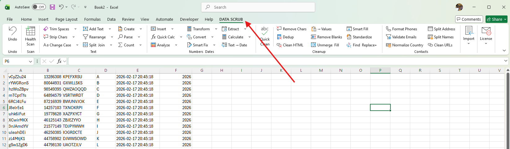

Text
Trim and normalize whitespace, change case, remove characters, split or join text, extract patterns, parse values, and create identifiers.
A practical set of 40+ tools for the cleanup tasks that interrupt accounting and operations work—from whitespace and dates to deduplication, imports, and contact data.

Select only the cells you intend to work on, choose the task, inspect the preview, then apply.
Trim and normalize whitespace, change case, remove characters, split or join text, extract patterns, parse values, and create identifiers.
Calculate, round, scale, normalize, rank, convert units, repair numeric text, handle signs, and replace formula errors safely.
Convert text to dates, extract date parts, calculate ages and differences, shift dates, and standardize date representations.
Find true duplicate records, remove blanks with safeguards, standardize categories, clean HTML, and run multi-rule replacements.
Format phones, validate email syntax, split names and addresses, normalize countries, and clean web addresses.
Bring in quoted CSV and delimited text, extract digital PDF or Word content, combine files, and preview clipboard data.
Inspect the selected data for blanks, type inconsistencies, duplicates, formula issues, whitespace, and other quality signals.
Reverse the most recent supported DataScrub operation while guarding against restoration into the wrong workbook or sheet.
Feature dialogs use a consistent options-and-preview layout, clear change counts, responsive sizing, and guarded action buttons.

Remove Characters keeps the options and preview visible together.

Build and review ordered multi-rule replacements.
Use a specialist command for a specific problem, Quick Clean for common fixes, or build a reusable multi-step pipeline for recurring exports.
Opening the launcher or Excel does not start the trial. The first DataScrub feature begins a fixed server-confirmed 72-hour period. A signed local cache permits up to 24 hours offline between checks, never beyond expiry.
Reinstalling or deleting local files does not issue another trial for the same protected machine identity.
A material clock rollback requires online verification rather than silently extending the trial.
The service stores hashed machine and installation identifiers—not workbook contents or raw hardware values.
Start with the complete three-day trial. No credit card is required to test the product.
The searchable guide documents the complete DataScrub feature set.